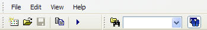
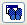

The main menu that appears at the top of the CPX window has the following options:

The File option has the following commands:
Saves the collected data in the current CPX session under a different file name. The shortcut key for this menu item is CTRL+S.
Note
CPX Does Not Allow Saving to Original File if Symbol Information Was Incorrect.
If you save CPX performance data to a file without symbol information, then later attempt to resave the data with symbol information, CPX will not allow you to save to the same file. Instead, CPX requires that you use the Save As menu item to save to a different filename.
Saving CPX data without symbol information can occur if the symbols path is not set correctly or the PDB file is missing.
The Edit option has the following commands:
The View option has the following commands:

on the main toolbar.The Help option has the following commands: